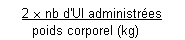

RÉSUMÉ DES CARACTÉRISTIQUES DU PRODUIT
ANSM - Mis à jour le : 09/09/2011
FACTANE 100 U.I./ml, poudre et solvant pour solution injectable
2. COMPOSITION QUALITATIVE ET QUANTITATIVE
Facteur VIII de coagulation humain ...................................................................................................... 100 UI
Pour 1 ml de solution reconstituée.
Après reconstitution:
· Un flacon de 2,5 ml contient 250 UI de facteur VIII de coagulation humain.
· Un flacon de 5 ml contient 500 UI de facteur VIII de coagulation humain.
· Un flacon de 10 ml contient 1000 UI de facteur VIII de coagulation humain.
L'activité spécifique est supérieure à 100 UI/mg de protéines.
FACTANE contient environ 20 UI/ml de facteur Willebrand.
Pour la liste complète des excipients, voir rubrique 6.1
Poudre et solvant pour solution injectable.
4.1. Indications thérapeutiques
Le facteur VIII de coagulation humain est indiqué pour le traitement et la prévention des hémorragies et en situation chirurgicale dans le déficit en facteur VIII (hémophilie A) chez les patients préalablement traités ou non, ne présentant pas d'inhibiteur dirigé contre le facteur VIII.
Le traitement peut être poursuivi chez les patients qui développent un inhibiteur du facteur VIII (anticorps neutralisant) à un taux inférieur à 5 unités Bethesda (UB) si la réponse clinique persiste avec une augmentation du taux de facteur VIII circulant.
Le facteur VIII de coagulation humain est indiqué pour le traitement de l'inhibiteur par induction de tolérance immune.
FACTANE ne contient pas de facteur Willebrand en quantité suffisante pour être utilisé seul dans la maladie de Willebrand.
4.2. Posologie et mode d'administration
Posologie
· Traitement et prévention des hémorragies et en situation chirurgicale
En règle générale, l'administration d'une UI de facteur VIII par kg de poids corporel fait augmenter le taux plasmatique de facteur VIII d'environ 2 %. Les formules suivantes permettent de déterminer la dose nécessaire à l'obtention d'une réponse donnée (I) ou la réponse à attendre d'une dose donnée (II):
I. Nb d'UI nécessaires =
poids corporel (kg) x augmentation souhaitée du taux de facteur VIII (% de la normale) x 0,5
II. Augmentation attendue du taux de facteur VIII (% de la normale) =

Les doses et la durée du traitement substitutif doivent être individualisées en fonction des besoins du patient (poids, sévérité des troubles de l'hémostase, site et importance de l'hémorragie, taux de facteur VIII souhaité et éventuel inhibiteur). Le tableau suivant donne une indication des valeurs minimales du taux plasmatique de facteur VIII. Dans les différentes situations hémorragiques décrites, l'activité du facteur VIII ne doit pas chuter au-dessous du taux indiqué (en % de la normale) pendant la durée mentionnée.
Le facteur VIII de coagulation humain peut être également utilisé en prophylaxie des hémorragies à une posologie adaptée à chaque individu. Des posologies allant de 15 à 30 UI par kg de poids corporel, administrées tous les 2 à 3 jours ont permis de limiter avec succès le nombre d'épisodes hémorragiques.
L'efficacité et la tolérance clinique du facteur VIII de coagulation humain du LFB (version non nanofiltrée) ont été montrées dans le traitement et la prévention des hémorragies et en situation chirurgicale chez l'enfant de moins de 6 ans par une étude rétrospective chez 103 enfants non traités préalablement et présentant un taux de FVIII: C < 1 %.
|
Accident hémorragique et acte chirurgical |
Taux plasmatique nécessaire de facteur VIII* |
Fréquence des injections et période pendant laquelle le taux plasmatique thérapeutique doit être maintenu |
|
Accident hémorragique mineur: hématome, hémarthrose, épistaxis. |
15 - 30 % |
Au moins une injection, selon la sévérité de l'hémorragie. |
|
Accident hémorragique grave: hémorragie musculaire, traumatisme crânien léger, hémorragie de la cavité buccale. |
30 - 50 % |
2 à 4 jours ou jusqu'à cicatrisation satisfaisante. |
|
Hémorragie mettant en jeu le pronostic 50 - 100 % vital: |
50 - 100 % |
Pendant 7 jours, puis poursuite du traitement pendant 4 à 7 jours supplémentaires de manière à maintenir le taux de facteur VIII entre 30 et 50 %. |
*(Mesuré en activité et exprimé en pourcentage de la normale)
Important
La dose et la fréquence des injections du facteur VIII de coagulation humain à administrer seront toujours adaptées à chaque cas individuel en fonction de l'efficacité clinique observée et du taux de facteur VIII atteint dans la circulation.
Le traitement substitutif de l'hémophilie A sans et, a fortiori, avec inhibiteur du facteur VIII, doit être pris en charge et surveillé régulièrement, en particulier pour l'apparition d'un inhibiteur. Si les taux de facteur VIII plasmatiques désirés ne peuvent être atteints ou si le saignement n'est pas maîtrisé après administration d'une dose calculée selon la formule ci-dessus, il faut réaliser des tests biologiques pour détecter la présence d'un inhibiteur. L'intérêt du traitement par le facteur VIII de coagulation humain doit alors être rediscuté (inefficacité thérapeutique, augmentation du titre de l'inhibiteur).
Cas des patients porteurs d'inhibiteurs
Le facteur VIII de coagulation humain peut rester efficace chez les patients qui développent au cours du traitement un inhibiteur du facteur VIII (anticorps neutralisant) à un taux inférieur à 5 unités Bethesda (UB). Le taux plasmatique du facteur VIII permet de s'assurer que le traitement substitutif est approprié. Le titre de l'inhibiteur doit être mesuré afin de s'assurer de l'absence de réponse anamnestique.
Chez les patients présentant un inhibiteur de titre élevé, supérieur à 5 UB, des doses importantes du facteur VIII de coagulation humain peuvent être nécessaires pour contrôler des hémorragies graves. Dans certains cas, l'importance des doses nécessaires au maintien d'un taux plasmatique suffisant de facteur VIII peut rendre ce traitement difficile à mettre en œuvre. Si l'hémostase ne peut être assurée avec le facteur VIII de coagulation humain en présence d'un titre élevé d'inhibiteur, l'emploi d'un concentré de complexe prothrombique activé ou d'un concentré de facteur VII activé doit être envisagé. De tels traitements doivent être conduits par des médecins ayant l'habitude de traiter des patients atteints d'hémophilie A.
Traitement de l'inhibiteur par induction de tolérance immune
La tolérance immune doit être initiée et conduite par une structure ayant l'habitude de traiter les patients atteints d'hémophilie A.
|
Induction de tolérance immune (ITI) |
DOSES* |
Modalités d'administration |
|
Initiation |
50 UI/kg/j 3 fois par semaine à 100 UI/kg/j tous les jours |
L'ITI doit être initiée dès que possible |
|
taux > 5 UB |
50-100 UI/kg/j 3 fois par semaine à 100 à 300 UI/kg/j tous les jours |
|
|
Après disparition de l'inhibiteur, récupération normale et demi-vie normale |
100 UI/kg/j puis 50 UI/kg/j puis |
en paliers mensuels |
*(Traitement indicatif à adapter selon les contrôles biologiques)
Les données cliniques obtenues lors d'études rétrospectives chez 6 patients ont permis d'établir la disparition complète de l'inhibiteur par induction de tolérance immune chez 5 d'entre eux avec un recul de plusieurs années et une disparition partielle chez le sixième.
Mode d'administration
FACTANE se présente sous forme d'une poudre, à reconstituer extemporanément avec de l'eau pour préparations injectables selon les modalités décrites dans le paragraphe 6.6. "Instructions pour l'utilisation, la manipulation et l'élimination".
FACTANE doit être exclusivement injecté par voie intraveineuse, en une seule fois, immédiatement après reconstitution, sans dépasser 4 ml/minute.
La solution est claire ou légèrement opalescente. Ne pas utiliser de solution trouble ou contenant un dépôt.
Hypersensibilité connue à l'un des constituants de la préparation.
4.4. Mises en garde spéciales et précautions d'emploi
Le traitement substitutif de l'hémophilie A sans et, a fortiori, avec inhibiteur du facteur VIII par le facteur VIII de coagulation humain, doit être pris en charge ou surveillé par un spécialiste de l'hémophilie.
Comme tout médicament contenant des protéines et administré par voie intraveineuse, FACTANE peut provoquer la survenue de réactions allergiques.
Les malades doivent être informés des signes précoces des réactions d'hypersensibilité tels qu'œdème, urticaire, urticaire généralisée, oppression thoracique, respiration sifflante, hypotension et anaphylaxie.
En cas d'apparition de ces symptômes, l'administration doit être interrompue immédiatement. En cas de choc anaphylactique, le traitement symptomatique de l'état de choc devra être instauré.
Les formules proposées plus haut pour le calcul de la posologie permettent d'estimer la dose nécessaire mais il est fortement recommandé de pratiquer les examens biologiques appropriés à intervalles réguliers afin de vérifier que le taux plasmatique souhaité de facteur VIII a été atteint et se maintient. En cas d'intervention chirurgicale majeure tout particulièrement, un contrôle minutieux du traitement substitutif est indispensable à l'aide des tests de coagulation.
Après des traitements répétés d'une dose apparemment correcte du facteur VIII de coagulation humain, en l'absence de réponse clinique ou si le taux de facteur VIII n'atteint pas le niveau prévu, il est indispensable de rechercher la présence d'inhibiteur du facteur VIII (anticorps neutralisant le facteur VIII). Il faut alors en démontrer la présence dans le plasma et le titrer en unités internationales à l'aide de tests biologiques appropriés, notamment chez les patients non préalablement traités, dits "naïfs".
Le risque de transmission d'agents infectieux, y compris ceux dont la nature est encore inconnue, ne peut pas être définitivement exclu lorsque sont administrés des médicaments préparés à partir de sang ou de plasma humain.
Ce risque est cependant limité par:
· de stricts contrôles effectués lors de la sélection des dons par un entretien médical avec les donneurs et la réalisation de tests de dépistage sur chaque don, en particulier pour trois virus pathogènes majeurs, VIH, VHC, VHB;
· la recherche du matériel génomique du VHC sur les pools de plasma;
· le procédé d'extraction/purification qui inclut des étapes d'élimination et(ou) d'inactivation virale, dont la capacité a été validée pour le VIH, le VHC, le VHB, le parvovirus B19, le VHA, à l'aide de virus modèles.
L'efficacité de l'élimination et(ou) de l'inactivation virale reste cependant limitée vis-à-vis de certains virus non enveloppés particulièrement résistants tel que le parvovirus B19.
Il est recommandé que les patients recevant régulièrement des facteurs de coagulation soient correctement vaccinés contre l'hépatite A et l'hépatite B.
4.5. Interactions avec d'autres médicaments et autres formes d'interactions
Aucune interaction médicamenteuse avec le facteur VIII de coagulation humain n'est connue à ce jour.
L'hémophilie A est une affection qui touche presque uniquement les sujets de sexe masculin. De ce fait l'innocuité des concentrés de facteur VIII chez la femme enceinte n'a pas été évaluée par des essais cliniques contrôlés. L'expérimentation animale est insuffisante pour établir la sécurité vis-à-vis de la reproduction, du déroulement de la grossesse, du développement de l'embryon ou du fœtus et du développement postnatal.
Par conséquent le facteur VIII de coagulation humain ne sera prescrit qu'en cas de nécessité absolue au cours de la grossesse et de l'allaitement.
4.7. Effets sur l'aptitude à conduire des véhicules et à utiliser des machines
Rien ne suggère que le facteur VIII de coagulation humain diminue l'aptitude à conduire des véhicules ou à utiliser des machines.
L'apparition d'un inhibiteur du facteur VIII est une complication connue survenant chez les patients atteints d'hémophilie A. Elle peut entraîner une absence de réponse clinique.
Lors des études cliniques avec le facteur VIII de coagulation humain du LFB (version non nanofiltrée) conduites chez 104 patients non traités préalablement avec un taux de FVIII:C < 1 %, 15 patients ont développé un inhibiteur (14,4 %) dont 5 avec un taux supérieur à 5 UB.
Aucune apparition d'inhibiteur n'a été observée chez les 32 patients hémophiles sévères préalablement traités suivis au moins 6 mois lors des essais cliniques effectués avec FACTANE.
Depuis la commercialisation de FACTANE, l'apparition d'inhibiteurs du facteur VIII a été rapportée. Ces inhibiteurs ont été observés chez les patients non traités préalablement (PUPs) par FACTANE et chez les patients déjà traités (PTPs).
Les patients traités avec le facteur VIII de coagulation humain doivent être surveillés soigneusement sur le plan clinique et biologique, en ce qui concerne le développement de ces anticorps inhibiteurs.
Rarement, des réactions allergiques sont observées, et peuvent dans certains cas évoluer vers une réaction anaphylactique sévère voire un choc.
La fréquence des effets indésirables a été définie selon les critères suivants: très fréquent (≥1/10), fréquent (≥1/100 à <1/10), peu fréquent (≥1/1 000 à <1/100), rare (≥1/10 000 à <1/1 000) et très rare (<1/10 000), inconnu (ne peut être calculé à partir des données disponibles).
Affections du système immunitaire
Fréquence inconnue: hypersensibilité, choc anaphylactique.
Affections psychiatriques
Fréquence inconnue: agitation.
Affections du système nerveux
Fréquence inconnue: céphalées, somnolence, paresthésies.
Affections cardiaques
Fréquence inconnue: tachycardie.
Affections vasculaires
Fréquence inconnue: hypotension, bouffées de chaleur.
Affections respiratoires, thoraciques et médiastinales
Fréquence inconnue: dyspnée, sibilants.
Affections gastro-intestinales
Fréquence inconnue: nausées, vomissements.
Affections de la peau et des tissus sous-cutanés
Fréquence inconnue: prurit, érythème, urticaire, angio-œdème.
Troubles généraux et anomalies au site d'administration
Fréquence inconnue: oppression thoracique, œdème localisé, œdème généralisé, douleur au point d'injection, frissons, asthénie.
Investigations
Fréquence inconnue: température augmentée.
Aucun effet indésirable lié à un surdosage accidentel n'a été rapporté jusqu'à présent avec FACTANE.
5. PROPRIETES PHARMACOLOGIQUES
5.1. Propriétés pharmacodynamiques
Classe pharmacothérapeutique: sang et organes hématopoïétiques, facteur VIII de coagulation humain, code ATC: B02BD02.
FACTANE contient essentiellement du facteur VIII, responsable de l'activité de coagulation. Il permet l'hémostase chez l'hémophile A.
L'hémophilie A est un trouble héréditaire de la coagulation sanguine due à un déficit en facteur VIII qui engendre des hémorragies profuses soit spontanément soit à la suite d'un traumatisme d'origine accidentel ou chirurgical.
Le facteur VIII:C est la partie coagulante du complexe facteur VIII circulant dans le plasma. Il est associé de façon non covalente au facteur Willebrand. Dans FACTANE, la totalité du facteur VIII est associée au facteur Willebrand.
Ces deux protéines possèdent des propriétés biochimiques et immunologiques distinctes et sont sous un contrôle génétique différent. Le facteur VIII:C agit comme cofacteur du facteur IX afin d'activer le facteur X. Une fois activé, le facteur X convertit la prothrombine en thrombine, qui elle-même convertit le fibrinogène en fibrine, aboutissant à la formation du caillot.
Le taux résiduel de facteur Willebrand (antigène) dans cette préparation est de l'ordre de 20 UI/ml.
5.2. Propriétés pharmacocinétiques
Le pic plasmatique de FACTANE est habituellement observé 15 min après l'injection.
Dans une étude effectuée chez 12 patients, la récupération FVIII:C de FACTANE a été de 2,6 ± 0,7 UI/dl/UI/kg et la demi-vie de 12,1 ± 4,7 heures.
5.3. Données de sécurité préclinique
Le facteur VIII contenu dans cette préparation est un constituant normal du plasma humain et il se comporte comme le facteur VIII endogène.
Il n'a pas été effectué d'essais de toxicité réitérée, ni d'étude de reproduction chez l'animal.
Les données précliniques ne laissent supposer aucune potentialité mutagène de FACTANE.
Poudre: saccharose, mannitol, glycine, chlorhydrate de lysine et chlorure de calcium.
Solvant: eau pour préparations injectables.
Le facteur VIII de coagulation humain ne doit être mélangé avec aucun autre produit et(ou) médicament.
Seuls les dispositifs d'injection/perfusion homologués peuvent être utilisés car l'adsorption des facteurs de coagulation dérivés du plasma humain sur les surfaces internes de certains matériels de perfusion peut être responsable de l'échec du traitement.
30 mois.
Après reconstitution, une utilisation immédiate est recommandée. Toutefois la stabilité a été démontrée pendant 3 heures à + 25°C.
6.4. Précautions particulières de conservation
A conserver entre + 2°C et + 8°C (au réfrigérateur). Conserver le conditionnement primaire dans l'emballage extérieur, à l'abri de la lumière.
Pendant la durée de conservation, le produit peut être conservé à une température ne dépassant pas + 25°C pendant 6 mois maximum sans être à nouveau réfrigéré pendant cette période et doit être jeté s'il n'est pas utilisé au bout de ces 6 mois.
Ne pas congeler.
6.5. Nature et contenu de l'emballage extérieur
Poudre en flacon (verre) + 2,5 ml de solvant en flacon (verre) avec un système de transfert - boîte de 1.
Poudre en flacon (verre) + 5 ml de solvant en flacon (verre) avec un système de transfert - boîte de 1.
Poudre en flacon (verre) + 10 ml de solvant en flacon (verre) avec un système de transfert - boîte de 1.
6.6. Précautions particulières d’élimination et de manipulation
Respecter les règles d'asepsie habituelles.
Ne jamais utiliser les flacons dès la sortie du réfrigérateur.
· Amener les deux flacons (poudre et solvant) à une température ne dépassant 25°C.
· Retirer la capsule protectrice du flacon de solvant (eau pour préparations injectables) et du flacon de poudre.
· Désinfecter la surface de chaque bouchon.
· Retirer l'opercule du dispositif Mix2Vial. Sans extraire le dispositif de son emballage, enclencher l'extrémité bleue du Mix2Vial sur le bouchon du flacon de solvant.
· Retirer puis jeter l'emballage. Prendre soin de ne pas toucher la partie désormais exposée du dispositif.
· Retourner l'ensemble flacon de solvant-dispositif et l'enclencher sur le flacon de poudre par la partie transparente du dispositif. Le solvant est transféré automatiquement dans le flacon de poudre. Maintenir l'ensemble et agiter doucement, d'un mouvement circulaire, pour dissoudre totalement le produit.
· En maintenant la partie produit reconstituée d'une main et la partie solvant de l'autre, séparer les flacons en dévissant le dispositif Mix2Vial.
La mise en solution ainsi opérée est généralement instantanée et doit être totale en moins de 10 minutes.
La solution est incolore ou légèrement opalescente. Ne pas utiliser de solution trouble ou contenant un dépôt.
Administration:
· Tenir le flacon de produit reconstitué verticalement, en vissant une seringue stérile sur le dispositif Mix2Vial. Aspirer ensuite lentement le produit dans la seringue.
· Une fois le produit transféré dans la seringue, tenir celle-ci fermement (piston dirigé vers le bas), dévisser le dispositif Mix2Vial et le remplacer par une aiguille intraveineuse ou une aiguille épicrânienne.
· Expulser l'air de la seringue et piquer la veine après désinfection.
· Injecter lentement par voie intraveineuse en une seule fois, immédiatement après reconstitution, sans dépasser un débit de 4 ml/minute.
Tout produit non utilisé ou déchet doit être éliminé conformément à la réglementation en vigueur.
7. TITULAIRE DE L’AUTORISATION DE MISE SUR LE MARCHE
LFB-BIOMEDICAMENTS
3, avenue des Tropiques
ZA de Courtaboeuf
91940 Les Ulis
8. NUMERO(S) D’AUTORISATION DE MISE SUR LE MARCHE
· 562 115-5 ou 34009 562 115 5 5: Poudre en flacon (verre) + 2,5 ml de solvant en flacon (verre) avec un système de transfert - boîte de 1.
· 562 116-1 ou 34009 562 116 1 6: Poudre en flacon (verre) + 5 ml de solvant en flacon (verre) avec un système de transfert - boîte de 1.
· 562 117-8 ou 34009 562 117 8 4: Poudre en flacon (verre) + 10 ml de solvant en flacon (verre) avec un système de transfert - boîte de 1.
9. DATE DE PREMIERE AUTORISATION/DE RENOUVELLEMENT DE L’AUTORISATION
[à compléter par le titulaire]
10. DATE DE MISE A JOUR DU TEXTE
[à compléter par le titulaire]
Sans objet.
12. INSTRUCTIONS POUR LA PREPARATION DES RADIOPHARMACEUTIQUES
Sans objet.
Liste I.
Médicament soumis à une prescription initiale hospitalière de six mois (les établissements de transfusion sanguine autorisés à dispenser des médicaments dérivés du sang aux malades qui y sont traités, inclus). La délivrance est réservée aux pharmacies à usage intérieur des établissements de santé ou aux établissements de transfusion sanguine pour les malades qui y sont traités.